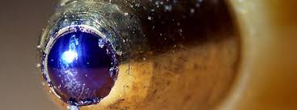

A origem da esferográfica
A esferográfica foi criada em 1888 por John J. Loud. Inicialmente era um produto destinado a marcar couros. Como o nome indica, esfero- (esfera) e -gráfica (escrita), as esferográficas são um tipo de caneta com uma esfera rolante na ponta envolvida em tinta, conseguindo assim uma distribuição constante e uniforme da tinta.

As primeiras esferográficas comercializadas na Europa foram da marca "Bic", tendo sido
produzidas por Marcel Bich.
Uma década depois, essas mesmas esferográficas começaram a ser vendidas nos Estados
Unidos por 0.29 dólares, tendo o seu preço descido após um ano para 0,1 dólares por unidade.